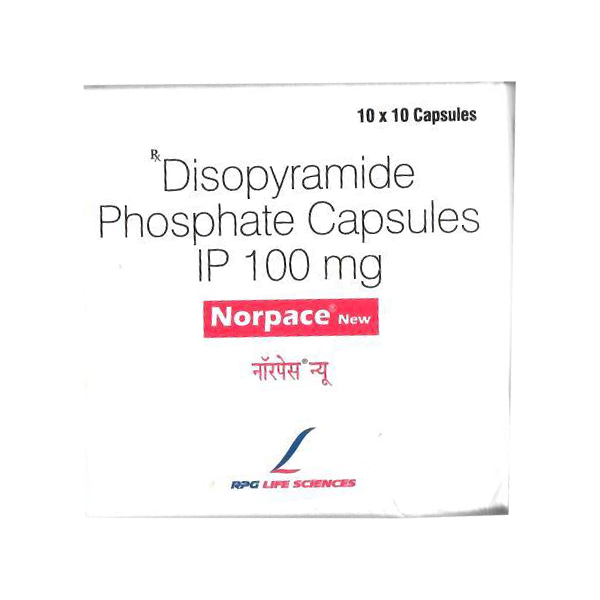
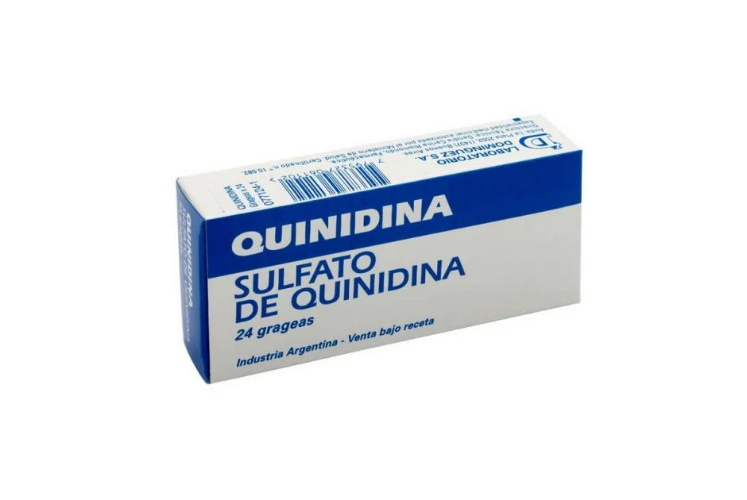

Bloquean los canales de sodio en fase 0 del potencial de acción, disminuyendo la velocidad de conducción. Además, prolongan la repolarización al afectar los canales de potasio, lo que incrementa el período refractario.
Tratamiento de arritmias supraventriculares (fibrilación auricular, flutter auricular) y ventriculares (taquicardia ventricular).
Bloqueo AV de segundo o tercer grado sin marcapasos, síndrome del QT largo congénito, miastenia gravis, insuficiencia cardíaca descompensada.
Prolongación del intervalo QT, torsades de pointes, hipotensión, efectos gastrointestinales, reacciones alérgicas, efectos anticolinérgicos.
Fármacos que prolongan el QT (macrólidos, fluoroquinolonas), digoxina, warfarina, inhibidores del CYP450.